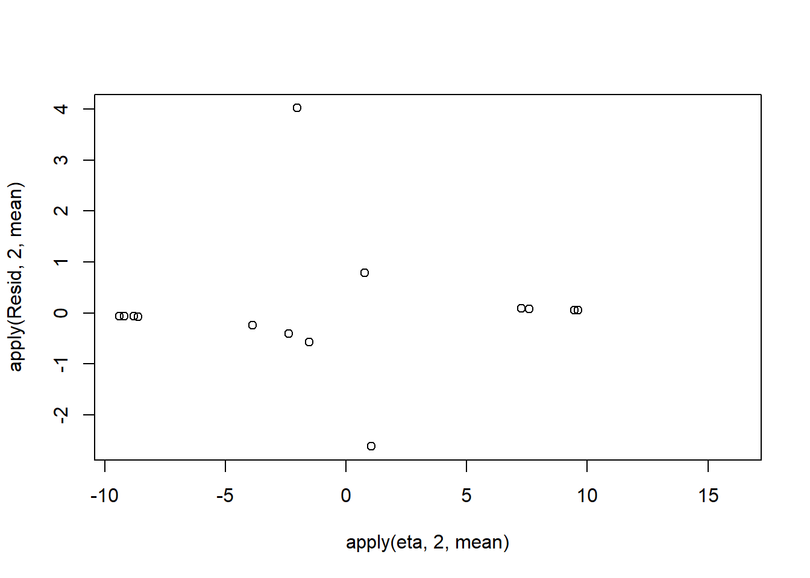

![]()
set.seed(865)
#The number of samples
n.x <- 20
#Create x values that at uniformly distributed throughout the rate of 1 to 20
x <- sort(runif(n = n.x, min = 1, max =20))
#The slope is the rate of change in log odds ratio for each unit change in x
# the smaller the slope, the slower the change (more variability in data too)
slope=0.5
#Inflection point is where the slope of the line is greatest
#this is also the LD50 point
inflect <- 10
#Intercept (no interpretation)
intercept <- -1*(slope*inflect)
#The linear predictor
linpred <- intercept+slope*x
#Predicted y values
y.pred <- exp(linpred)/(1+exp(linpred))
#Add some noise and make binomial
n.y <-rbinom(n=n.x,20,p=0.9)
y<- rbinom(n = n.x,size=1, prob = y.pred)
dat <- data.frame(y,x)Generalised Linear Models (JAGS)
Quarto
R
Academia
Software
Statistics
Abstract
This tutorial will focus on the use of Bayesian estimation to fit simple linear regression models …
Keywords
Software, Statistics, Stan
This tutorial will focus on the use of Bayesian estimation to fit simple linear regression models. BUGS (Bayesian inference Using Gibbs Sampling) is an algorithm and supporting language (resembling R) dedicated to performing the Gibbs sampling implementation of Markov Chain Monte Carlo (MCMC) method. Dialects of the BUGS language are implemented within three main projects:
OpenBUGS - written in component pascal.
JAGS - (Just Another Gibbs Sampler) - written in
C++.STAN - a dedicated Bayesian modelling framework written in
C++and implementing Hamiltonian MCMC samplers.
Whilst the above programs can be used stand-alone, they do offer the rich data pre-processing and graphical capabilities of R, and thus, they are best accessed from within R itself. As such there are multiple packages devoted to interfacing with the various software implementations:
R2OpenBUGS - interfaces with
OpenBUGSR2jags - interfaces with
JAGSrstan - interfaces with
STAN
This tutorial will demonstrate how to fit models in JAGS (Plummer (2004)) using the package R2jags (Su et al. (2015)) as interface, which also requires to load some other packages.
Overview
Introduction
Before discussing generalised linear models, we will first revise a couple of fundamental aspects of general linear models and in particular, how they restrict the usefulness of these models in clinical applications. General linear models provide a set of well adopted and recognised procedures for relating response variables to a linear combination of one or more continuous or categorical predictors (hence the “general”). Nevertheless, the reliability and applicability of such models are restricted by the degree to which the residuals conform to normality and the mean and variance are independent of one another. The general linear model essentially comprises three components.
\[ E[Y] = \beta_0 + \beta_1x_1 + \ldots + \beta_px_p + \epsilon. \]
The Random (Stochastic) component that specifies the conditional distribution (Normal or Gaussian distribution) of the response variable. Whilst the mean of the normal distribution is assumed to vary as a function of the linear predictors (Systematic component - the regression equation), the variance is assumed to remain constant. Denoted \(\epsilon\) in the above equation, the random component is more formally defined as \(Y_i \sim N(0, \sigma^2)\). That is, each value of \(Y\) (the response) is assumed to be drawn from a normal distribution with different means (\(\mu_i\)) yet fixed variance (\(\sigma^2\)).
The Systematic component that represents the linear combination of predictors (which can be categorical, continuous, polynomial or other contrasts) for a linear predictor. The linear predictor describes (predict) the “expected” mean and variability of the response(s) (which are assumed to follow normal distribution(s)).
The Link function which links the expected values of the response (Random component) to the linear combination of predictors (systematic component). For the normal (Gaussian) distribution, the link function is a the “identity” link (\(\mu_i\)). That is:
\[ \mu_i = \beta_0 + \beta_1x_{i1} + \ldots + \beta_px_{ip} \]
There are many real situations for which the assumptions imposed by the normal distribution are unlikely to be satisfied. For example, if the measured response to a predictor treatment (such as nest parasite load) can only be binary (such as abandoned or not), then the differences between the observed and expected values (residuals) are unlikely to follow a normal distribution. Instead, in this case, they should follow a binomial distribution.
Often response variables have a restricted range. For example a species may be either present or not present and thus the response is restricted to either \(1\) (present) or absent (\(0\)). Values less than \(0\) or greater than \(1\) are not logical. Similarly, the abundance of a species in a quadrat is bounded by a minimum value of zero - it is not possible to have fewer than zero individuals. Proportional abundances are also restricted to between \(0\) and \(1\) (or \(100\)). The normal distribution however, is valid for the range between positive and negative infinity (ie not restricted) and thus expected values of the linear predictor can be outside of the restricted range that naturally operates on the response variable. Hence, the normal distribution might not always represent a sensible probability model as it can predict values outside the logical range of the data. Furthermore, the as a result of these range restrictions, variance can be tied to the mean in that expected probabilities towards the extremes of the restricted range tend to have lower variability (as the lower or upper bounds of the probabilities are trunctated).
Data types
Response data can generally be classified into one of four levels
Nominal - responses are those that represent un-ordered categories For example, we could record the ‘preferred’ food choice of an animal as either “Fruit”, “Meat”, “Seeds” or “Leaves”. The spacing between categories is undetermined and responses are restricted to those options.
Ordinal - responses are those that represent categories with sensible orders, yet undetermined spacing between categories. Likert scale questionnaire responses to questions such as “Rate the quality of your experience… on a scale of \(1\) to \(5\)” are a classic example. Categorized levels of a response (“High”, “Medium”,“Low”) would also be another example of an ordinal variable
Interval - responses are those for which both the order and scale (spacing) are meaningful, yet multiplication is meaningless due to the arbitrary scale of the data (where zero does not refer to nothing). Temperature in degrees C is a good example of such a response (consider whether \(-28\) degrees \(^\star-1 = 28\) degrees has a sensible interpretation).
Ratio - responses are those for which order, scale and zero are meaningful. For example a measurement scale such as length in millimeters or mass in grams.
GLMs
Generalized linear models (GLM’s) extend the application range of linear modelling by accommodating non-stable variances as well as alternative exponential residual distributions (such as the binomial and Poisson distributions). GLMs have the same three components as general linear models (of which the systematic component is identical), yet a broader range of Random components are accommodated and thus alternative Link functions must also be possible.
Random component defines the exponential distribution (Gaussian, Poisson, binomial, gamma, and inverse Gaussian distributions) from which the responses are assumed to be drawn. These distributions are characterised by some function of the mean (canonical or location parameter) and a function of the variance (dispersion parameter). Note that for binomial and Poisson distributions, the dispersion parameter is \(1\), whereas for the Guassian (normal) distribution the dispersion parameter is the error variance and is assumed to be independent of the mean. The negative binomial distribution can also be treated as an exponential distribution if the dispersion parameter is fixed as a constant.
Systematic component again defines the linear combination of predictors
Link function, \(g(\mu)\) links the systematic and random components. Although there are many commonly employed link functions, typically the exact form of the link function depends on the nature of the random response distribution. Some of the canonical (natural choice) link functions and distribution pairings that are suitable for different forms of generalized linear models are listed in the following table. The only real restriction on a link function is that it must preserve the order of values such that larger values are always larger than smaller values (be monotonic) and must yield derivatives that are legal throughout the entire range of the data.
Link functions
In contrast to fitting linear models to transformations of the raw data, the link functions transform the curve predicted by the systematic component into a scale approximating that of the response.
Logit. Log odds-ratio The slope parameter represents the rate of change in log odds-ratio per unit increase in a predictor.
Probit. The probit transformation is the inverse cumulative distribution for the standard normal distribution and is useful when the response is likely to be a categorization of an otherwise continuous scale. So whilst measurements might be recorded on a categorical scale (either for convenience or because that is how they manifest), these measurements are a proxy for an underlying variable (latent variable) that is actually continuous. So if the purpose of the linear modeling is to predict the underlying latent variable, then probit regression is likely to be appropriate. The slope parameter represents the rate of change in response probability per unit increase in a predictor.
Complementary log-log. The log-log transformation is useful for extremely asymmetrical distributions (notably survival analyses).
Estimation
The generalized nature of GLM’s makes them incompatible with ordinary least squares model fitting procedures. Instead, parameter estimates and model fitting are typically achieved by maximum likelihood methods based on an iterative re-weighting algorithm (such as the Newton-Raphson algorithm). Essentially, the Newton-Raphson algorithm (also known as a scoring algorithm) fits a linear model to an adjusted response variable (transformed via the link function) using a set of weights and then iteratively re-fits the model with new sets of weights recalculated according to the fit of the previous iteration. For canonical link-distribution pairs (see the table above), the Newton-Raphson algorithm usually converges (arrives at a common outcome or equilibrium) very efficiently and reliably. The Newton-Raphson algorithm facilitates a unifying model fitting procedure across the family of exponential probability distributions thereby providing a means by which binary and count data can be incorporated into the suit of regular linear model designs. In fact, linear regression (including ANOVA, ANCOVA and other general linear models) can be considered a special form of GLM that features a normal distribution and identity link function and for which the maximum likelihood procedure has an exact solution. Notably, when variance is stable, both maximum likelihood and ordinary least squares yield very similar parameter estimates.
Typical distributions used for GLMs include:
Gaussian.
Binomial. Represents the number of successes out of \(n\) independent trials each with a set probability (typically \(0.5\))
Poisson.
Negative Binomial. Represents the number of failures out of a sequence of n independent trials before a success is obtained each with a set probability. Alternatively, a negative binomial can be defined in terms of its mean (\(\mu\)) and dispersion parameter. The dispersion parameter can be used to adjust the variances independent of the mean and is therefore useful as an alternative to the Poisson distribution when there is evidence of overdispersion (dispersion parameter \(>1\)).
Dispersion
The variance of binomial or Poisson distributions is assumed to be related to the sample size and mean respectively, and thus, there is not a variance parameter in their definitions. In fact, the variance (or dispersion) parameter is fixed to \(1\). As a result, logistic/probit regression as well as Poisson regression and log-linear modelling assume that sample variances conform to the respective distribution definitions. However, it is common for individual sampling units (e.g. individuals) to co-vary such that other, unmeasured influences, increase (or less commonly, decrease) variability. For example, although a population sex ratio might be 1:1, male to female ratios within a clutch might be highly skewed towards one or other sex. Positive correlations cause greater variance (overdispersion) and result in deflated standard errors (and thus exaggerated levels of precision and higher Type I errors). Additionally, count data (for example number of fish per transect) can be overdispersed as a result of an unexpectedly high number of zero’s (zero inflated). In this case, the zeros arise for two reasons.
Genuine zero values - zero fish counted because there were non present.
False zeros - there were fish present, yet not detected (and thus not recorded).
The dispersion parameter (degree of variance inflation or over-dispersion) can be estimated by dividing either the Pearsons \(\chi^2\) or the Deviance by the degrees of freedom, where \(n\) is the number of observations in p parameters). As a general rule, dispersion parameters approaching \(2\) (or \(0.5\)) indicate possible violations of this assumption (although large overdispersion parameters can also be the result of a poorly specified model or outliers). Where over (or under) dispersion is suspected to be an issue, the following options are available:
use quasibinomial and quasipoisson families can be used as alternatives to model the dispersion. These quasi-likelihood models derive the dispersion parameter (function of the variance) from the observed data and are useful when overdispersion is suspected to be caused by positive correlations or other unobserved sources of variance. Rather than assuming that the variance is fixed, quasi- models assume that variance is a linear (multiplicative) function of the mean. Test statistics from such models should be based on F-tests rather than chi-squared tests.
for count data, use a negative binomial as an alternative to a Poisson distribution. The negative binomial distribution also estimates the dispersion parameter and assumes that the variance is a quadratic function of the mean.
use zero-inflated binomial (ZIB) and zero-inflated poisson (ZIP) when overdispersion is suspected to be caused by excessive numbers of zeros.
Binary data - logistic regression
Logistic regression is a form of GLM that employs the logit-binomial link distribution canonical pairing to model the effects of one or more continuous or categorical (with dummy coding) predictor variables on a binary (dead/alive, presence/absence, etc) response variable. For example, we could investigate the relationship between salinity levels (salt concentration) and mortality of frogs. Similarly, we could model the presence of a species of bird as a function of habitat patch size, or nest predation (predated or not) as a function of the distance from vegetative cover. Consider the fictitious data presented in the following figure. Clearly, a regular simple linear model is inappropriate for modelling the probability of presence. Note that at very low and high levels of \(X\), the predicted probabilities (probabilities or proportions of the population) are less than zero and greater than one respectively - logically impossible outcomes. Note also, that the residuals cannot be drawn from a normal distribution, since for any value of \(X\), there are only two possible outcomes (\(1\) or \(0\)).
The logistic model (Figure c above) relating the probability (\(\pi(x)\)) that the response (\(y_i\)) equals one (present) for a given level of \(x_i\) (patch size) is defined as:
\[ \pi(x) = \frac{e^{\beta_0 + \beta_1x}}{1+e^{\beta_0+\beta_1x}} \]
Appropriately, since \(e^{\beta_0+\beta_1x}\) (the “natural constant” raised to a simple linear model) must evaluate to between 0 and infinity, the logistic model must asymptote towards (and is thus bounded by) zero and one. Alternatively (as described briefly above), the logit link function can be used to transform \(\pi(x)\) such that the logistic model is expressed as the log odds (probability of one state relative to the alternative) against a familiar linear combination of the explanatory variables (as is linear regression).
\[ ln \left( \frac{\pi(x)}{1-\pi(x)} \right) = \beta_0 + \beta_1x_i \]
Although the \(\beta_0\) (\(y\)-intercept) parameter is interpreted similar to that of linear regression (albeit of little clinical interest), this is not the case for the slope parameter (\(\beta_1\)). Rather than representing the rate of change in the response for a given change in the predictor, in logistic regression, \(\beta_1\) represents the rate of change in the odds ratio (ratio of odds of an event at two different levels of a predictor) for a given unit change in the predictor. The exponentiated slope represents the odds ratio (\(\theta=e^{\beta_1}\)), the proportional rate at which the predicted odds change for a given unit change of the predictor.
Null hypotheses
As with linear regression, a separate \(H_0\) is tested for each of the estimated model parameters:
\(H_0:\beta_1=0\) (the population slope - proportional rate of change in odds ratio). This test examines whether the log odds of an occurrence are independent of the predictor variable and thus whether or not there is likely to be a relationship between the response and predictor.
\(H_0:\beta_0=0\) (the population intercept equals zero). As stated previously, this is typically of little clinical interest.
Similar to linear regression, there are two ways of testing the main null hypotheses:
Parameter estimation approach. Maximum likelihood estimates of the parameters and their asymptoticd standard errors (\(S_{b1}\)) are used to calculate the Wald \(t\) (or \(t\)-ratio) statistic \(W=\frac{b_1}{S_{b1}}\), which approximately follows a standard \(z\) distribution when the null hypothesis is true. The reliability of Wald tests diminishes substantially with small sample sizes. For such cases, the second option is therefore more appropriate.
(log)-likelihood ratio tests approach. This approach essentially involves comparing the fit of models with (full) and without (reduced) the term of interest:
\[ \text{logit}(\pi) = \beta_0 + \beta_1x_1 \;\;\; (\text{full model}) \]
\[ \text{logit}(\pi) = \beta_0 \;\;\; (\text{reduced model}) \]
The fit of any given model is measured via log-likelihood and the differences between the fit of two models is described by a likelihood ratio statistic (G2 \(= 2\)(log-likelihood reduced model - log-likelihood full model)). The G2 quantity is also known as deviance and is analogous to the residual sums of squares in a linear model. When the null hypothesis is true, the G2 statistic approximately follows a \(\chi^2\) distribution with one degree of freedom. An analogue of the linear model \(r^2\) measure can be calculated as:
\[ r^2 = 1- \frac{G^2_0}{G^2_1}, \]
where \(G^2_0\) and \(G^2_1\) are the deviances due to the intercept and slope terms respectively. Analogous to the ANOVA table that partitions the total variation into components explained by each of the model terms (and the unexplained error), it is possible to construct a analysis of deviance table that partitions the deviance into components explained by each of the model terms.
Count data - Poisson and log-linear models
Another form of data for which scale transformations are often unsuitable or unsuccessful are count data. Count data tend to follow a Poisson distribution (see here) and consequently, the mean and variance are usually related. Generalized linear models provide appropriate means to model count data according to two design contexts:
as an alternative to linear regression for modeling count data against a linear combination of continuous and/or categorical predictor variables (Poisson regression)
as an alternative to contingency tables in which the associations between categorical variables are explored (log-linear modelling)
Poisson regression
The Poisson regression model is
\[ \log(\mu)=\beta_0 + \beta_1x_1+ \ldots + \beta_px_p, \]
where \(\log(\mu)\) is the link function used to link the mean of the Poisson response variable to the linear combination of predictor variables. Poisson regression otherwise shares null hypotheses, parameter estimation, model fitting and selection with logistic regression.
Log-linear modelling
Contingency tables were introduced along with caveats regarding the reliability and interoperability of such analyses (particularly when expected proportions are small or for multi-way tables). In contrast to logistic and Poisson regression, all variables in a log-linear model do not empirically distinguish between response and predictor variables. Nevertheless, as in contingency tables, causality can be implied when logical and justified by interpretation. The saturated (or full) log-linear model resembles a multiway ANOVA model. The full and reduced log-linear models for a two factor design are:
\[ \log(f_{ij}) = \mu + \gamma^A_i + \gamma^B_j + \gamma^{AB}_{ij} \;\;\; (\text{full model}), \]
\[ \log(f_{ij}) = \mu + \gamma^A_i + \gamma^B_j \;\;\; (\text{reduced model}) \]
where \(\log(f_{ij}\) is the log link function, \(\mu\) is the mean of the (log) of expected frequencies (\(f_{ij}\)) and \(\gamma^A_i\) is the effect of the ith category of the variable (A), \(\gamma^B_j\) is the effect of the \(j\)-th category of B and \(\gamma^{AB}_{ij}\) is the interactive effect of each category combination on the (log) expected frequencies. Reduced models differ from full models in the absence of all higher order interaction terms. Comparing the fit of full and reduced models therefore provides a means of assessing the effect of the interaction. Whilst two-way tables contain only a single interaction term (and thus a single full and reduced model), multiway tables have multiple interactions. For example, a three-way table has a three way interaction (ABC) as well as three two-way interactions (AB, AC, BC). Consequently, there are numerous full and reduced models, each appropriate for different interaction terms. The following table indicates the association between null hypothesis and fitted models.
Null hypothese
Consistent with contingency table analysis, log-linear models test the null hypothesis (\(H_0\)) that the categorical variables are independent of (not associated with) one another. Such null hypotheses are tested by comparing the fit (deviance, G2) of full and reduced models. The G2 is compared to a \(\chi^2\) distribution with degrees of freedom equal to the difference in degrees of freedom of the full and reduced models. Thereafter, odds ratios are useful for interpreting any lack of independence. For multi-way tables, there are multiple full and reduced models:
Complete dependence: \(H_0: ABC = 0\). No three way interaction. Either no association (conditional independence) between each pair of variables, or else the patterns of associations (conditional dependencies) are the same for each level of the third. If this null hypothesis is rejected (\(ABC \neq 0\)), the causes of lack of independence can be explored by examining the residuals or odds ratios. Alternatively, main effects tests (testing the effects of two-way interactions separately at each level of the third) can be performed. If the three-way interaction is not rejected (no three-way association), lower order interactions can be explored.
Conditional independence/dependence: if the three-way interaction is not rejected (no three-way association), lower order interactions can be explored.
- \(H_0: AB=0\) - A and B conditionally independent (not associated) within each level of C.
- \(H_0: AC=0\) - A and C conditionally independent (not associated) within each level of B.
- \(H_0: BC=0\) - B and C conditionally independent (not associated) within each level of A.
Marginal independence:
- \(H_0: AB=0\) - no association between A and B pooling over C.
- \(H_0: AC=0\) - no association between A and C pooling over B.
- \(H_0: BC=0\) - no association between B and C pooling over A.
Complete independence: If none of the two-way interactions are rejected (no two-way associations), complete independence (all two-way interactions equal zero) can be explored.
- \(H_0: AB=AC=BC=0\) - Each of the variables are completely independent of all the other variables.
Analysis of designs with more than three factors proceed similarly, starting with tests of higher order interactions and progressing to lower order interactions only in the absence of higher order interactions.
Assumptions
Compared to general linear models, the requirements of generalised linear models are less stringent. In particular, neither normality nor homoscedasticity are assumed. Nevertheless, to maximize the reliability of null hypotheses tests, the following assumptions do apply:
all observations should be independent to ensure that the samples provide an unbiased estimate of the intended population.
it is important to establish that no observations are overly influential. Most linear model influence (and outlier) diagnostics extend to generalized linear models and are taken from the final iteration of the weighted least squares algorithm. Useful diagnoses include:
Residuals - there are numerous forms of residuals that have been defined for generalized linear models, each essentially being a variant on the difference between observed and predicted (influence in \(y\)-space) theme. Note that the residuals from logistic regression are difficult to interpret.
Leverage - a measure of outlyingness and influence in \(x\)-space.
Dfbeta - an analogue of Cook’s D statistic which provides a standardized measure of the overall influence of observations on the parameter estimates and model fit.
although linearity between the response and predictors is not assumed, the relationship between each of the predictors and the link function is assumed to be linear. This linearity can be examined via the following:
goodness-of-fit. For log-linear models, \(\chi^2\) contingency tables can be performed, however due to the low reliability of such tests with small sample sizes, this is not an option for logistic regression with continuous predictor(s) (since each combination is typically unique and thus the expected values are always \(1\)).
Hosmer-Lemeshow (\(\hat{C}\)). Data are aggregated into \(10\) groups or bins (either by cutting the data according to the predictor range or equal frequencies in each group) such that goodness-of-fit test is more reliable. Nevertheless, the Hosmer-Lemeshow statistic has low power and relies on the somewhat arbitrary bin sizes.
le Cessie-van Houwelingen-Copas omnibus test. This is a goodness-of-fit test for binary data based on the smoothing of residuals.
component + residual (partial residual) plots. Non-linearity is diagnosed as a substantial deviation from a linear trend.
Non-linearity can be dealt with either by transformation (of the predictor variable(s), fitting polynomial terms or via splines/generalised additive modelling (GAM) depending on the degree and nature of the non-linearity.
- (over or under) dispersion.
Data generation
Logistic regression is a type of generalised linear model (GLM) that models a binary response against a linear predictor via a specific link function. The linear predictor is the typically a linear combination of effects parameters (e.g. \(\beta_0+\beta_1x_1\)). The role of the link function is to transform the expected values of the response \(y\) (which is on the scale of (\(0,1\)), as is the binomial distribution from which expectations are drawn) into the scale of the linear predictor (which is \(-\infty;\infty\)). GLM’s transform the expected values (via a link) whereas LM’s transform the observed data. Thus while GLM’s operate on the scale of the original data and yet also on a scale appropriate of the residuals, LM’s do neither. There are many ways (transformations) that can map values on the (\(0,1\)) scale into values on the (\(-\infty;\infty\)) scale, however, the three most common are:
logit: \(\log\left(\frac{\pi}{1-\pi}\right)\) - log odds ratio.
probit: \(\phi^{-1}(\pi)\) where \(\phi^{-1}\) is an inverse normal cumulative density function.
complimentary log-log: \(\log(−\log(1−\pi))\).
Lets say we wanted to model the presence/absence of an item (\(y\)) against a continuous predictor (\(x\)) As this section is mainly about the generation of artificial data (and not specifically about what to do with the data), understanding the actual details are optional and can be safely skipped.
With these sort of data, we are primarily interested in investigating whether there is a relationship between the binary response variable and the linear predictor (linear combination of one or more continuous or categorical predictors).
Exploratory data analysis
So lets explore linearity by creating a histogram of the predictor variable (\(x\)) and a scatterplot of the relationship between the response (\(y\)) and the predictor (\(x\))
hist(dat$x)#now for the scatterplot
plot(y~x, dat)
with(dat, lines(lowess(y~x)))
Conclusions: the predictor (\(x\)) does not display any skewness or other issues that might lead to non-linearity. The lowess smoother on the scatterplot does not display major deviations from a standard sigmoidal curve and thus linearity is satisfied. Violations of linearity could be addressed by either:
define a non-linear linear predictor (such as a polynomial, spline or other non-linear function).
transform the scale of the predictor variables.
Model fitting
Effects model
Note that in order to prevent arithmetic overflows (particularly with the clog-log model, I am going to constrain the estimated linear predictor to between \(-20\) and \(20\). Values outside of this on a inverse-log scale are extremely small and huge respectively. I will demonstrate logistic regression with a range of possible link functions (each of which yield different parameter interpretations). Consider first the logit function:
\[ y \sim \text{Bern}(\pi), \]
where \(\text{logit}(\pi)=\beta_0+\beta_1x_1\) and \(\beta_0,\beta_1 \sim N(0, 10000)\).
modelString="
model{
for (i in 1:N) {
y[i] ~ dbern(p[i])
logit(p[i]) <- max(-20,min(20,beta0+beta1*x[i]))
}
beta0 ~ dnorm(0,1.0E-06)
beta1 ~ dnorm(0,1.0E-06)
}
"
writeLines(modelString, con='modellogit.txt')
dat.list <- with(dat, list(y=y, x=x, N=nrow(dat)))
params <- c('beta0','beta1')
nChains = 2
burnInSteps = 5000
thinSteps = 1
numSavedSteps = 20000
nIter = ceiling((numSavedSteps * thinSteps)/nChains)
library(R2jags)
dat.logit.jags <- jags(data=dat.list,model.file='modellogit.txt', param=params,
n.chains=nChains, n.iter=nIter, n.burnin=burnInSteps, n.thin=thinSteps)NA Compiling model graph
NA Resolving undeclared variables
NA Allocating nodes
NA Graph information:
NA Observed stochastic nodes: 20
NA Unobserved stochastic nodes: 2
NA Total graph size: 147
NA
NA Initializing modelSecond, we consider the probit function:
\[ y \sim \text{Bern}(\pi), \]
where \(\text{probit}(\pi)=\beta_0+\beta_1x_1\) and \(\beta_0,\beta_1 \sim N(0, 10000)\).
modelString2="
model{
for (i in 1:N) {
y[i] ~ dbern(p[i])
probit(p[i]) <- max(-20,min(20,beta0+beta1*x[i]))
}
beta0 ~ dnorm(0,1.0E-06)
beta1 ~ dnorm(0,1.0E-06)
}
"
writeLines(modelString2, con='modelprobit.txt')
dat.list <- with(dat, list(y=y, x=x, N=nrow(dat)))
params <- c('beta0','beta1')
nChains = 2
burnInSteps = 5000
thinSteps = 1
numSavedSteps = 20000
nIter = ceiling((numSavedSteps * thinSteps)/nChains)
dat.probit.jags <- jags(data=dat.list,model.file='modelprobit.txt', param=params,
n.chains=nChains, n.iter=nIter, n.burnin=burnInSteps, n.thin=thinSteps)NA Compiling model graph
NA Resolving undeclared variables
NA Allocating nodes
NA Graph information:
NA Observed stochastic nodes: 20
NA Unobserved stochastic nodes: 2
NA Total graph size: 147
NA
NA Initializing modelFinally, the complementary log-log
\[ y \sim \text{Bern}(\pi), \]
where \(\text{probit}(\pi)=\beta_0+\beta_1x_1\) and \(\beta_0,\beta_1 \sim N(0, 10000)\).
modelString3="
model{
for (i in 1:N) {
y[i] ~ dbern(p[i])
cloglog(p[i]) <- max(-20,min(20,beta0+beta1*x[i]))
}
beta0 ~ dnorm(0,1.0E-06)
beta1 ~ dnorm(0,1.0E-06)
}
"
writeLines(modelString3, con='modelcloglog.txt')
dat.list <- with(dat, list(y=y, x=x, N=nrow(dat)))
params <- c('beta0','beta1')
nChains = 2
burnInSteps = 5000
thinSteps = 1
numSavedSteps = 20000
nIter = ceiling((numSavedSteps * thinSteps)/nChains)
dat.cloglog.jags <- jags(data=dat.list,model.file='modelcloglog.txt', param=params,
n.chains=nChains, n.iter=nIter, n.burnin=burnInSteps, n.thin=thinSteps)NA Compiling model graph
NA Resolving undeclared variables
NA Allocating nodes
NA Graph information:
NA Observed stochastic nodes: 20
NA Unobserved stochastic nodes: 2
NA Total graph size: 147
NA
NA Initializing modelPrior to exploring the model parameters, it is prudent to confirm that the model did indeed fit the assumptions and was an appropriate fit to the data as well as that the MCMC sampling chain was adequately mixed and the retained samples independent. Whilst I will only demonstrate this for the logit model, the procedure would be identical for exploring the probit and clog-log models.
Model evaluation
library(mcmcplots)
denplot(dat.logit.jags, parms = c("beta0","beta1"))traplot(dat.logit.jags, parms = c("beta0","beta1"))raftery.diag(as.mcmc(dat.logit.jags))NA [[1]]
NA
NA Quantile (q) = 0.025
NA Accuracy (r) = +/- 0.005
NA Probability (s) = 0.95
NA
NA Burn-in Total Lower bound Dependence
NA (M) (N) (Nmin) factor (I)
NA beta0 50 54338 3746 14.50
NA beta1 36 39555 3746 10.60
NA deviance 4 4955 3746 1.32
NA
NA
NA [[2]]
NA
NA Quantile (q) = 0.025
NA Accuracy (r) = +/- 0.005
NA Probability (s) = 0.95
NA
NA Burn-in Total Lower bound Dependence
NA (M) (N) (Nmin) factor (I)
NA beta0 30 31743 3746 8.47
NA beta1 40 52860 3746 14.10
NA deviance 8 10336 3746 2.76autocorr.diag(as.mcmc(dat.logit.jags))NA beta0 beta1 deviance
NA Lag 0 1.0000000 1.0000000 1.0000000
NA Lag 1 0.9816715 0.9811729 0.5841946
NA Lag 5 0.9190319 0.9197111 0.4477029
NA Lag 10 0.8458674 0.8477906 0.3948904
NA Lag 50 0.4300407 0.4306464 0.2065881It seems that the level of auto-correlation at the nominated lag of \(10\) is extremely high. Ideally, the level of auto-correlation should be less than \(0.1\). To achieve this, we need a lag of \(1000\). Consequently, we will resample at a lag of \(1000\) and obviously we are going to need more iterations to ensure that we retain a large enough sample from which to derive estimates. In order to support a thinning rate of \(1000\), the number of iterations is going to need to be very high. Hence, the following might take considerable time to run.
dat.logit.jags <- jags(data=dat.list,model.file='modellogit.txt', param=params,
n.chains=nChains, n.iter=nIter, n.burnin=burnInSteps, n.thin=100)NA Compiling model graph
NA Resolving undeclared variables
NA Allocating nodes
NA Graph information:
NA Observed stochastic nodes: 20
NA Unobserved stochastic nodes: 2
NA Total graph size: 147
NA
NA Initializing modelprint(dat.logit.jags)NA Inference for Bugs model at "modellogit.txt", fit using jags,
NA 2 chains, each with 10000 iterations (first 5000 discarded), n.thin = 100
NA n.sims = 100 iterations saved
NA mu.vect sd.vect 2.5% 25% 50% 75% 97.5% Rhat n.eff
NA beta0 -16.51 9.652 -40.133 -20.118 -14.170 -9.587 -5.463 1.040 58
NA beta1 1.66 0.973 0.458 0.979 1.427 2.032 3.926 1.026 100
NA deviance 9.94 2.764 7.457 8.161 8.942 10.678 16.848 1.024 100
NA
NA For each parameter, n.eff is a crude measure of effective sample size,
NA and Rhat is the potential scale reduction factor (at convergence, Rhat=1).
NA
NA DIC info (using the rule, pD = var(deviance)/2)
NA pD = 3.8 and DIC = 13.8
NA DIC is an estimate of expected predictive error (lower deviance is better).autocorr.diag(as.mcmc(dat.logit.jags))NA beta0 beta1 deviance
NA Lag 0 1.0000000 1.0000000 1.0000000
NA Lag 100 0.4435502 0.4390086 0.1529258
NA Lag 500 0.1102886 0.1246140 0.1950554
NA Lag 1000 -0.1091505 -0.1008427 -0.1582021Conclusions: the samples are now less auto-correlated and the chains are arguably mixed better. We now explore the goodness of fit of the models via the residuals and deviance. We could calculate the Pearsons’s residuals within the JAGS model. Alternatively, we could use the parameters to generate the residuals outside of JAGS.
library(boot)
coefs <- dat.logit.jags$BUGSoutput$sims.matrix[,1:2]
Xmat <- model.matrix(~x, data=dat)
eta<-coefs %*% t(Xmat)
pi <- inv.logit(eta)
#sweep across rows and then divide by pi
Resid <- -1*sweep(pi,2,dat$y,'-')/sqrt(pi*(1-pi))
plot(apply(Resid,2,mean)~apply(eta,2,mean))
Now we will compare the sum of squared residuals to the sum of squares residuals that would be expected from a Bernoulli distribution matching that estimated by the model. Essentially this is estimating how well the Bernoulli distribution and linear model approximates the observed data.
SSres<-apply(Resid^2,1,sum)
#generate a matrix of draws from a binomial distribution
# the matrix is the same dimensions as pi and uses the probabilities of pi
YNew <- matrix(rbinom(length(pi),prob=pi,size=1),nrow=nrow(pi))
Resid1<-(pi - YNew)/sqrt(pi*(1-pi))
SSres.sim<-apply(Resid1^2,1,sum)
mean(SSres.sim>SSres, na.rm = T)NA [1] 0.21875Alternatively, we could generate the new samples and calculate the sums squares of residuals etc all within JAGS.
dat.list <- with(dat, list(y=y, x=x, N=nrow(dat)))
modelString="
model{
for (i in 1:N) {
y[i] ~ dbern(p[i])
logit(p[i]) <- max(-20,min(20,eta[i]))
eta[i] <- beta0+beta1*x[i]
YNew[i] ~dbern(p[i])
varY[i] <- p[i]*(1-p[i])
PRes[i] <- (y[i] - p[i]) / sqrt(varY[i])
PResNew[i] <- (YNew[i] - p[i]) / sqrt(varY[i])
D[i] <- pow(PRes[i],2)
DNew[i] <- pow(PResNew[i],2)
}
Fit <- sum(D[1:N])
FitNew <-sum(DNew[1:N])
beta0 ~ dnorm(0,1.0E-06)
beta1 ~ dnorm(0,1.0E-06)
pvalue <- mean(FitNew>Fit)
}
"
writeLines(modelString, con='modellogit_v2.txt')
params <- c('beta0','beta1','Fit','FitNew')
nChains = 2
burnInSteps = 5000
thinSteps = 1
numSavedSteps = 20000
nIter = ceiling((numSavedSteps * thinSteps)/nChains)
dat.logit.jags1 <- jags(data=dat.list,model.file='modellogit_v2.txt', param=params,
n.chains=nChains, n.iter=nIter, n.burnin=burnInSteps, n.thin=thinSteps)NA Compiling model graph
NA Resolving undeclared variables
NA Allocating nodes
NA Graph information:
NA Observed stochastic nodes: 20
NA Unobserved stochastic nodes: 22
NA Total graph size: 343
NA
NA Initializing modelprint(dat.logit.jags1)NA Inference for Bugs model at "modellogit_v2.txt", fit using jags,
NA 2 chains, each with 10000 iterations (first 5000 discarded)
NA n.sims = 10000 iterations saved
NA mu.vect sd.vect 2.5% 25% 50% 75% 97.5% Rhat n.eff
NA Fit 38.470 339.283 6.122 8.237 12.604 24.120 186.621 1.013 540
NA FitNew 15.837 230.080 0.395 2.025 3.780 8.372 63.411 1.001 3800
NA beta0 -15.507 7.665 -35.657 -19.433 -13.831 -10.040 -4.873 1.024 660
NA beta1 1.570 0.791 0.501 0.991 1.390 1.979 3.656 1.017 10000
NA deviance 9.678 2.175 7.482 8.070 9.018 10.581 15.412 1.013 220
NA
NA For each parameter, n.eff is a crude measure of effective sample size,
NA and Rhat is the potential scale reduction factor (at convergence, Rhat=1).
NA
NA DIC info (using the rule, pD = var(deviance)/2)
NA pD = 2.4 and DIC = 12.0
NA DIC is an estimate of expected predictive error (lower deviance is better).out <- dat.logit.jags1$BUGSoutput
mean(out$sims.list$FitNew > out$sims.list$Fit)NA [1] 0.1947Conclusions: although the Bayesian p-value is quite a bit lower than \(0.5\), suggesting that there is more variability in the data than should be expected from this simple logistic regression model, this value is not any closer to \(0\) (a value that would indicate that the model does not fit the data at all well. Thus we might conclude that whilst not ideal, the model is adequate.
Exploring the model parameters
If there was any evidence that the assumptions had been violated or the model was not an appropriate fit, then we would need to reconsider the model and start the process again. In this case, there is no evidence that the test will be unreliable so we can proceed to explore the test statistics.
library(coda)
print(dat.logit.jags)NA Inference for Bugs model at "modellogit.txt", fit using jags,
NA 2 chains, each with 10000 iterations (first 5000 discarded), n.thin = 100
NA n.sims = 100 iterations saved
NA mu.vect sd.vect 2.5% 25% 50% 75% 97.5% Rhat n.eff
NA beta0 -16.51 9.652 -40.133 -20.118 -14.170 -9.587 -5.463 1.040 58
NA beta1 1.66 0.973 0.458 0.979 1.427 2.032 3.926 1.026 100
NA deviance 9.94 2.764 7.457 8.161 8.942 10.678 16.848 1.024 100
NA
NA For each parameter, n.eff is a crude measure of effective sample size,
NA and Rhat is the potential scale reduction factor (at convergence, Rhat=1).
NA
NA DIC info (using the rule, pD = var(deviance)/2)
NA pD = 3.8 and DIC = 13.8
NA DIC is an estimate of expected predictive error (lower deviance is better).library(plyr)
adply(dat.logit.jags$BUGSoutput$sims.matrix[,1:2], 2, function(x) {
data.frame(Median=median(x), Mean=mean(x), HPDinterval(as.mcmc(x)), HPDinterval(as.mcmc(x),p=0.5))
})NA X1 Median Mean lower upper lower.1 upper.1
NA 1 beta0 -14.169526 -16.510277 -38.4322729 -2.190571 -15.809670 -6.767604
NA 2 beta1 1.427161 1.660376 0.3019023 3.728819 0.866335 1.791501Conclusions: We would reject the null hypothesis (p\(<0.05\)). An increase in \(x\) is associated with a significant linear increase (positive slope) in log odds of y success. Every \(1\) unit increase in \(x\) results in a \(0.86\) unit increase in log odds-ratio. We usually express this in terms of odds-ratio rather than log odds-ratio, so every \(1\) unit increase in \(x\) results in a (\(e^{0.86}=2.36\)) \(2.36\) unit increase in odds-ratio.
Explorations of the trends
We might also be interested in the LD50 - the value of \(x\) where the probability switches from favoring \(1\) to favoring \(0\). LD50 is calculated as:
\[ LD50 = - \frac{\text{intercept}}{\text{slope}} \]
summary(as.mcmc(-coefs[,1]/coefs[,2]))NA
NA Iterations = 1:100
NA Thinning interval = 1
NA Number of chains = 1
NA Sample size per chain = 100
NA
NA 1. Empirical mean and standard deviation for each variable,
NA plus standard error of the mean:
NA
NA Mean SD Naive SE Time-series SE
NA 9.92488 0.84980 0.08498 0.06916
NA
NA 2. Quantiles for each variable:
NA
NA 2.5% 25% 50% 75% 97.5%
NA 7.737 9.460 9.894 10.448 11.538#OR
LD50 <- -coefs[,1]/coefs[,2]
data.frame(Median=median(LD50), Mean=mean(LD50), HPDinterval(as.mcmc(LD50)), HPDinterval(as.mcmc(LD50),p=0.5))NA Median Mean lower upper lower.1 upper.1
NA var1 9.894002 9.924877 7.930942 11.59808 9.547373 10.50285Conclusions: the LD50 is \(10.5\). Finally, we will create a summary plot.
par(mar = c(4, 5, 0, 0))
plot(y ~ x, data = dat, type = "n", ann = F, axes = F)
points(y ~ x, data = dat, pch = 16)
xs <- seq(0, 20, l = 1000)
Xmat <- model.matrix(~xs)
eta<-coefs %*% t(Xmat)
ys <- inv.logit(eta)
library(plyr)
data.tab <- adply(ys,2,function(x) {
data.frame(Median=median(x), HPDinterval(as.mcmc(x)))
})
data.tab <- cbind(x=xs,data.tab)
points(Median ~ x, data=data.tab,col = "black", type = "l")
lines(lower ~ x, data=data.tab,col = "black", type = "l", lty = 2)
lines(upper ~ x, data=data.tab,col = "black", type = "l", lty = 2)
axis(1)
mtext("X", 1, cex = 1.5, line = 3)
axis(2, las = 2)
mtext("Y", 2, cex = 1.5, line = 3)
box(bty = "l")Grouped binary data
In the previous demonstration, the response variable represented the state of a single item per level of the predictor variable (\(x\)). That single item could be observed having a value of either \(1\) or \(0\). Another common situation is to observe the number of items in one of two states (typically dead or alive) for each level of a treatment. For example, you could tally up the number of germinated and non-germinated seeds out of a bank of \(10\) seeds at each of \(8\) temperature or nutrient levels. Recall that the binomial distribution represents the density (probability) of all possible successes (germinations) out of a total of \(N\) items (seeds). Hence the binomial distribution is also a suitable error distribution for such grouped binary data. For this demonstration, we will model the number of successes against a uniformly distributed predictor (\(x\)). The number of trials in each group (level of the predictor) will vary slightly (yet randomly) so as to mimick complications that inevadably occur in real experiments.
set.seed(876)
#The number of levels of x
n.x <- 10
#Create x values that at uniformly distributed throughout the rate of 10 to 20
x <- sort(runif(n = n.x, min = 10, max =20))
#The slope is the rate of change in log odds ratio for each unit change in x
# the smaller the slope, the slower the change (more variability in data too)
slope=-.25
#Inflection point is where the slope of the line is greatest
#this is also the LD50 point
inflect <- 15
#Intercept (no interpretation)
intercept <- -1*(slope*inflect)
#The linear predictor
linpred <- intercept+slope*x
#Predicted y values
y.pred <- exp(linpred)/(1+exp(linpred))
#Add some noise and make binary (0's and 1's)
n.trial <- rbinom(n=n.x,20, prob=0.9)
success <- rbinom(n = n.x, size = n.trial,prob = y.pred)
failure <- n.trial - success
dat <- data.frame(success,failure,x)Exploratory data analysis
So lets explore linearity by creating a histogram of the predictor variable (\(x\)) and a scatterplot of the relationship between the either the number of successes (success) or the number of (failures) and the predictor (\(x\)). Note, that this will not account for the differences in trial size per group and so a scatterplot of the relationship between the number of successes (success) or the number of (failures) divided by the total number of trials against the predictor (\(x\)) might be more appropriate.
hist(dat$x)#now for the scatterplot
plot(success~x, dat)
with(dat, lines(lowess(success~x)))#scatterplot standardised for trial size
plot(success/(success+failure)~x, dat)
with(dat, lines(lowess(success/(success+failure)~x)))Conclusions: the predictor (\(x\)) does not display any skewness (although it is not all that uniform - random data) or other issues that might lead to non-linearity. The lowess smoother on either scatterplot does not display major deviations from a standard sigmoidal curve and thus linearity is likely to be satisfied. Violations of linearity could be addressed by either:
define a non-linear linear predictor (such as a polynomial, spline or other non-linear function).
transform the scale of the predictor variables.
Model fitting
Clearly the number of successes is also dependent on the number of trials. Larger numbers of trials might be expected to yeild higher numbers of successes.
dat.list <- with(dat, list(success=success, total=success+failure, x=x, N=nrow(dat)))
modelString="
model{
for (i in 1:N) {
success[i] ~ dbin(p[i],total[i])
logit(p[i]) <- max(-20,min(20,beta0+beta1*x[i]))
}
beta0 ~ dnorm(0,1.0E-06)
beta1 ~ dnorm(0,1.0E-06)
}
"
writeLines(modelString, con='modelgbin.txt')
params <- c('beta0','beta1')
nChains = 2
burnInSteps = 5000
thinSteps = 1
numSavedSteps = 20000
nIter = ceiling((numSavedSteps * thinSteps)/nChains)
dat.logit.jags <- jags(data=dat.list,model.file='modelgbin.txt', param=params,
n.chains=nChains, n.iter=nIter, n.burnin=burnInSteps, n.thin=thinSteps)NA Compiling model graph
NA Resolving undeclared variables
NA Allocating nodes
NA Graph information:
NA Observed stochastic nodes: 10
NA Unobserved stochastic nodes: 2
NA Total graph size: 87
NA
NA Initializing modelAs with the logistic regression presented earlier, we could alternatively use probit or clog-log link functions.
Model evaluation
denplot(dat.logit.jags, parms = c("beta0","beta1"))traplot(dat.logit.jags, parms = c("beta0","beta1"))raftery.diag(as.mcmc(dat.logit.jags))NA [[1]]
NA
NA Quantile (q) = 0.025
NA Accuracy (r) = +/- 0.005
NA Probability (s) = 0.95
NA
NA Burn-in Total Lower bound Dependence
NA (M) (N) (Nmin) factor (I)
NA beta0 46 50468 3746 13.50
NA beta1 90 98698 3746 26.30
NA deviance 6 8920 3746 2.38
NA
NA
NA [[2]]
NA
NA Quantile (q) = 0.025
NA Accuracy (r) = +/- 0.005
NA Probability (s) = 0.95
NA
NA Burn-in Total Lower bound Dependence
NA (M) (N) (Nmin) factor (I)
NA beta0 84 103188 3746 27.50
NA beta1 52 58312 3746 15.60
NA deviance 8 9488 3746 2.53autocorr.diag(as.mcmc(dat.logit.jags))NA beta0 beta1 deviance
NA Lag 0 1.0000000 1.0000000 1.00000000
NA Lag 1 0.9830416 0.9831425 0.56062724
NA Lag 5 0.9248140 0.9256704 0.42678260
NA Lag 10 0.8543024 0.8555131 0.36633408
NA Lag 50 0.4631353 0.4636323 0.07250394Lets explore the diagnostics - particularly the residuals.
inv.logit <- binomial()$linkinv
#Calculate residuals
coefs <- dat.logit.jags$BUGSoutput$sims.matrix[,1:2]
Xmat <- model.matrix(~x, data=dat)
eta<-coefs %*% t(Xmat)
pi <- inv.logit(eta)
#sweep across rows and then divide by pi
Resid <- -1*sweep(pi,2,dat$success/(dat$success+dat$failure),'-')/sqrt(pi*(1-pi))
plot(apply(Resid,2,mean)~apply(eta,2,mean))
lines(lowess(apply(Resid,2,mean)~apply(eta,2,mean)))Conclusions: there is no obvious patterns in the residuals, or at least there are no obvious trends remaining that would be indicative of non-linearity.
Now we will compare the sum of squared residuals to the sum of squares residuals that would be expected from a Bernoulli distribution matching that estimated by the model. Essentially this is estimating how well the Bernoulli distribution and linear model approximates the observed data.
SSres<-apply(Resid^2,1,sum)
#generate a matrix of draws from a binomial distribution
#the matrix is the same dimensions as pi and uses the probabilities of pi
YNew <- matrix(rbinom(length(pi),prob=pi,size=(dat$success+dat$failure)),nrow=nrow(pi))
Resid1 <- 1*(pi-YNew/(dat$success+dat$failure))/sqrt(pi*(1-pi))
SSres.sim<-apply(Resid1^2,1,sum)
mean(SSres.sim>SSres, na.rm=T)NA [1] 0.4559Conclusions: this Bayesian p-value is reasonably close to \(0.5\). Therefore we would conclude that there was no strong evidence for a lack of fit of the model.
Explorations of the trends
We might also be interested in the LD50 - the value of \(x\) where the probability switches from favoring \(1\) to favoring \(0\). LD50 is calculated as:
\[ LD50 = - \frac{\text{intercept}}{\text{slope}} \]
summary(as.mcmc(-coefs[,1]/coefs[,2]))NA
NA Iterations = 1:10000
NA Thinning interval = 1
NA Number of chains = 1
NA Sample size per chain = 10000
NA
NA 1. Empirical mean and standard deviation for each variable,
NA plus standard error of the mean:
NA
NA Mean SD Naive SE Time-series SE
NA 12.80838 6.30455 0.06305 0.05732
NA
NA 2. Quantiles for each variable:
NA
NA 2.5% 25% 50% 75% 97.5%
NA 10.09 12.45 13.08 13.58 14.41#OR
LD50 <- -coefs[,1]/coefs[,2]
data.frame(Median=median(LD50), Mean=mean(LD50), HPDinterval(as.mcmc(LD50)), HPDinterval(as.mcmc(LD50),p=0.5))NA Median Mean lower upper lower.1 upper.1
NA var1 13.08204 12.80838 10.76017 14.74202 12.71997 13.79013Conclusions: the LD50 is \(13.1\). Finally, we will create a summary plot.
par(mar = c(4, 5, 0, 0))
plot(success/(success+failure) ~ x, data = dat, type = "n", ann = F, axes = F)
points(success/(success+failure) ~ x, data = dat, pch = 16)
xs <- seq(min(dat$x, na.rm=TRUE),max(dat$x, na.rm=TRUE), l = 1000)
Xmat <- model.matrix(~xs)
eta<-coefs %*% t(Xmat)
ys <- inv.logit(eta)
data.tab <- adply(ys,2,function(x) {
data.frame(Median=median(x), HPDinterval(as.mcmc(x)))
})
data.tab <- cbind(x=xs,data.tab)
points(Median ~ x, data=data.tab,col = "black", type = "l")
with(data.tab,polygon(c(x,rev(x)),c(lower,rev(upper)), col="#0000ff60", border=NA))
#lines(lower ~ x, data=data.tab,col = "black", type = "l", lty = 2)
#lines(upper ~ x, data=data.tab,col = "black", type = "l", lty = 2)
axis(1)
mtext("X", 1, cex = 1.5, line = 3)
axis(2, las = 2)
mtext("Probability of success", 2, cex = 1.5, line = 3)
box(bty = "l")#or via ggplot
xs <- seq(min(dat$x, na.rm=TRUE),max(dat$x, na.rm=TRUE), l = 1000)
Xmat <- model.matrix(~xs)
eta<-coefs %*% t(Xmat)
library(boot)
ys <- inv.logit(eta)
library(plyr)
data.tab <- adply(ys,2,function(x) {
data.frame(Median=median(x), HPDinterval(as.mcmc(x)))
})
data.tab <- cbind(x=xs,data.tab)
library(ggplot2)
library(grid)
dat$p <- with(dat, success/(success+failure))
p1 <- ggplot(data.tab,aes(y=Median, x=x)) + geom_point(data=dat,aes(y=p, x=x),color="gray40")+
geom_smooth(aes(ymin=lower, ymax=upper), stat="identity")+
scale_x_continuous("X")+scale_y_continuous("Probability of success")
p1+theme(panel.grid.major=element_blank(),
panel.grid.minor=element_blank(),
panel.border=element_blank(),
panel.background=element_blank(),
axis.title.y=element_text(size=15,vjust=0,angle=90),
axis.title.x=element_text(size=15,vjust=-1),
axis.text.y=element_text(size=12),
axis.text.x=element_text(size=12),
axis.line=element_line(),
plot.margin=unit(c(0.5,0.5,2,2), "lines"))References
Plummer, Martyn. 2004. “JAGS: Just Another Gibbs Sampler.”
Su, Yu-Sung, Masanao Yajima, Maintainer Yu-Sung Su, and JAGS SystemRequirements. 2015. “Package ‘R2jags’.” R Package Version 0.03-08, URL Http://CRAN. R-Project. Org/Package= R2jags.